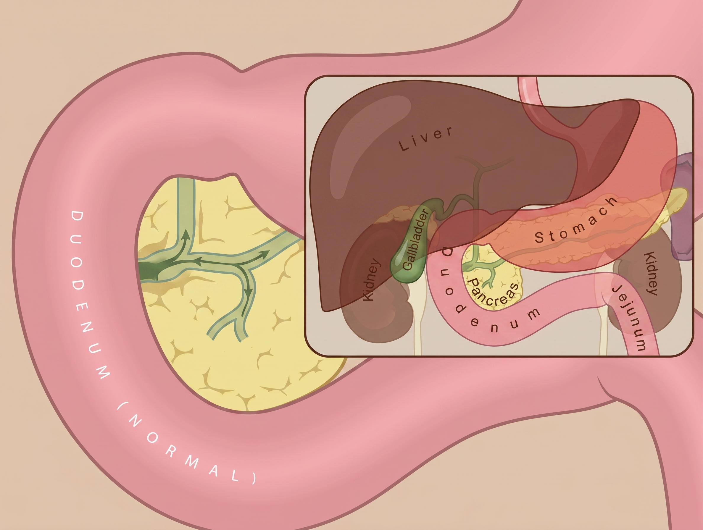
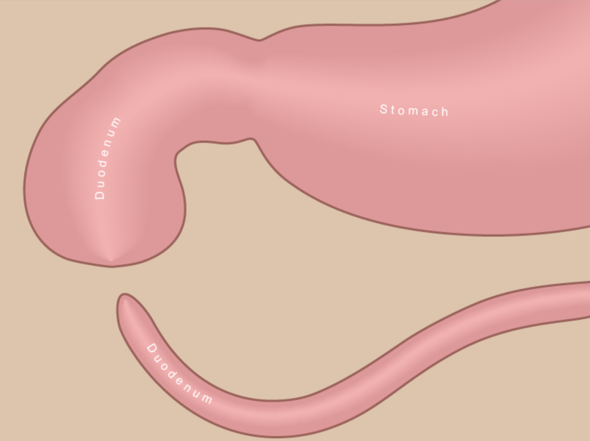
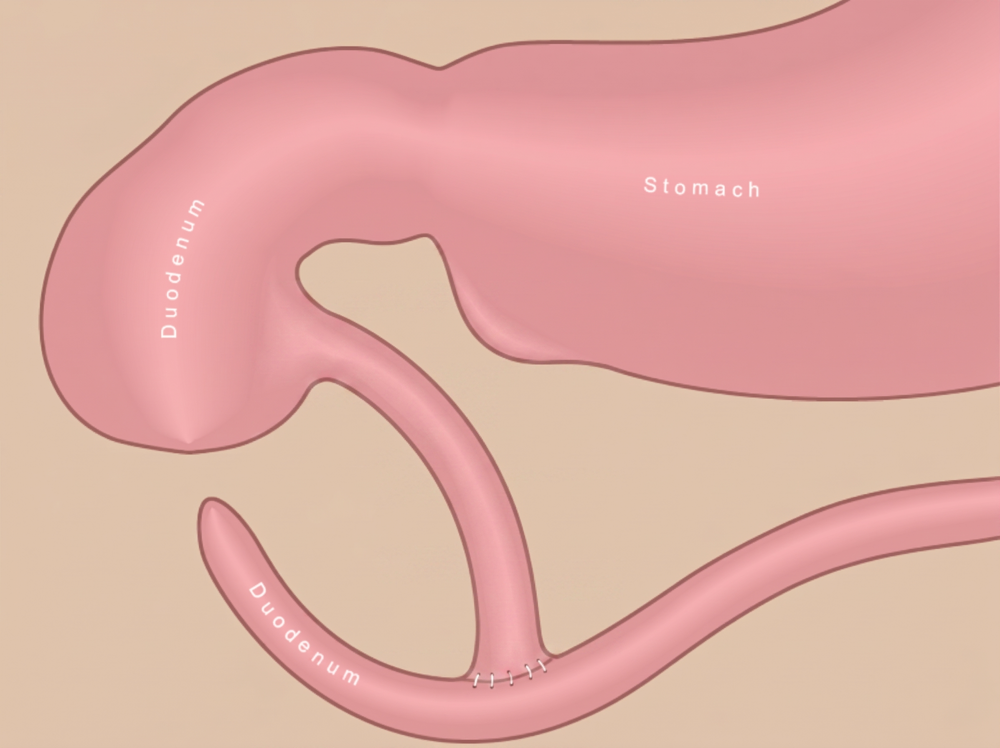

Maternal-Fetal Medicine · Prenatal Counseling
Polyhydramnios & Suspected Down Syndrome

Normally, fluid passes from the stomach into the first part of the small intestine, called the duodenum, and then continues through the bowel.
This pathway is what allows swallowed amniotic fluid to move through the baby's digestive tract before birth.

In duodenal atresia, the duodenum is blocked. Fluid can collect in the stomach and the first part of the duodenum.
This is why ultrasound may show a "double bubble" and why extra amniotic fluid, or polyhydramnios, can develop.

After birth, pediatric surgeons connect the open ends of the bowel so milk can pass through.
Babies usually need time in the NICU while the intestine starts working and feeding gradually increases.
Pathophysiology
Prenatal Ultrasound Finding
Two fluid-filled structures separated by the atretic segment. Pathognomonic for duodenal obstruction on prenatal ultrasound.
Maternal-Fetal Risk
Genetic Considerations
Counseling Framework
| Domain | Clinical Action | Priority |
|---|---|---|
| Prenatal Monitoring | Serial ultrasounds for AFI; monitor for preterm labor | Ongoing |
| Genetic Confirmation | Amniocentesis for karyotype & microarray | Prompt |
| Cardiac Evaluation | Fetal echocardiogram — mandatory | Prompt |
| Delivery Planning | Tertiary center with Level III/IV NICU & pediatric surgery | Planned |
| Family Counseling | Genetics consult; social work support | Supportive |
Postnatal Management
Prognosis & Outcomes
Our Commitment to Your Family
ACOG · SMFM · Evidence-Based Prenatal Counseling | Atlanta Perinatal Associates